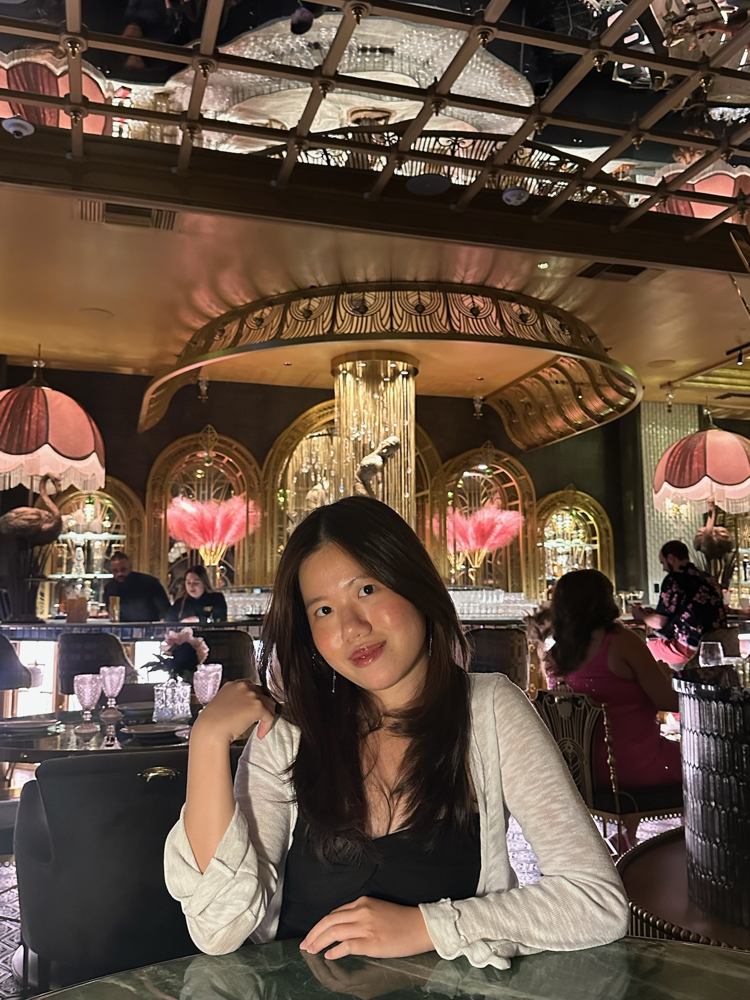

Hi I'm Sharon, welcome to my personal site and portfolio! I'm a Data Science student at the University of California, San Diego (UCSD), with a minor in Business Analytics. As an aspiring Data Scientist, I'm passionate about solving real-world problems using data. I enjoy working with Python, exploring data with pandas and seaborn, and applying machine learning to predict trends and patterns.
